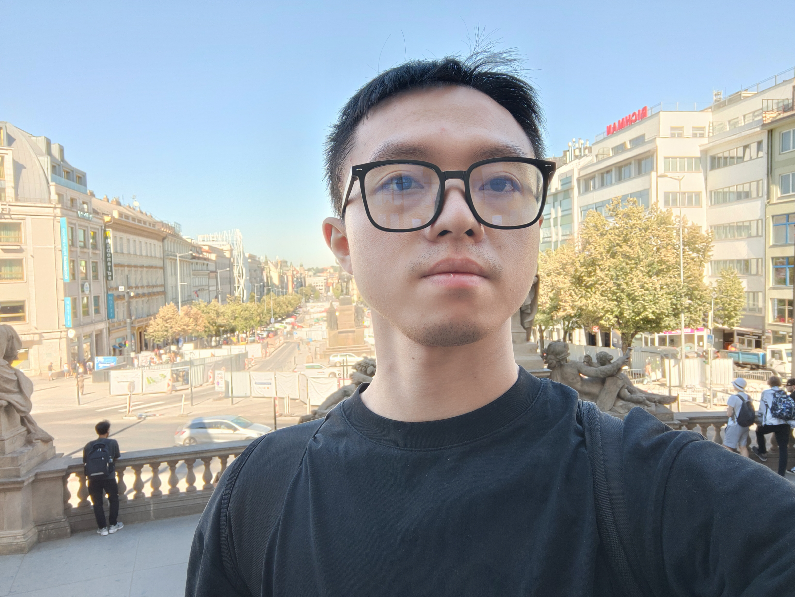
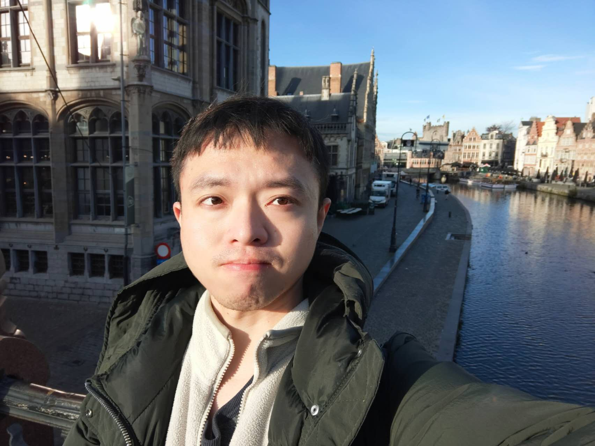
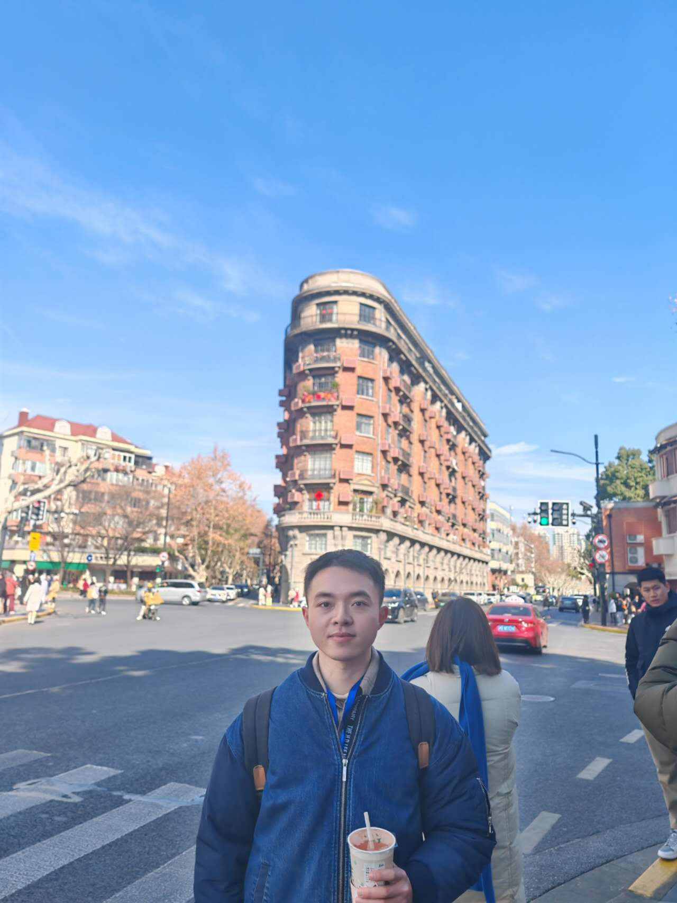

Xiang Xie谢翔
Ph.D. Candidate in Management Science and Engineering · Business School, Central South University
I am currently a Ph.D. candidate in Management Science and Engineering at the Business School, Central South University, China, and a visiting researcher at Bocconi University, Italy. My research focuses on simulation modelling and sensitivity analysis, with applications in systems engineering. My work has been published in several peer-reviewed journals, including IISE Transactions, EJOR, IJPR, TRA, and the Journal of Systems Engineering (in Chinese). I have also presented at leading international conferences such as the Winter Simulation Conference and the INFORMS Annual Meeting.
谢翔，湖南益阳人，中南大学商学院管理科学与工程专业博士研究生，现为意大利博科尼大学（Bocconi University）访问学者。主要研究方向为仿真建模与灵敏度分析及其在系统工程中的应用。研究成果发表于 IISE Transactions、EJOR、IJPR、TRA、《系统工程学报》等同行评审期刊，并在 Winter Simulation Conference、INFORMS Annual Meeting 等重要国际学术会议上展示论文。
- E-mailxiexianghy[@t]163[d.t]com
- HometownYiyang, Hunan, China
- 籍贯湖南益阳
- AddressBusiness School, Central South University, Changsha, Hunan 410083, China
- 地址中国湖南省长沙市 中南大学商学院 410083
Research Interests
Understanding how defect complaints drive recall decisions and delays.
Agent-based modelling, system dynamics and hybrid simulation of socio-technical systems.
Factor screening, sensitivity analysis and sequential methods with error control.
Using simulation-based sensitivity analysis to interpret complex models.
Publications
* Corresponding author
English Papers
- Wen Shi, Xiang Xie, Xi Chen*, Hong Wan. Sequential group Morris method with error control for efficient factor screening in simulation experiments. IISE Transactions, 2026, published online in advance. [paper]
- Wen Shi, Yuhao Qi, Xiang Xie*. Exploring the dynamic effects of emission policies: A hybrid approach integrating system dynamics and large language models. Transportation Research Part A: Policy and Practice, 2026, 214: 105278. [paper]
- Wen Shi, Xiang Xie, Xi Chen*. Unveiling the impact of defect complaints on vehicle recall delays: An integrated agent-based simulation and factor screening approach. International Journal of Production Research, 2025, 63(19): 6939–6960. [paper]
- Wen Shi, Ao Chen*, Xiang Xie. Generating and validating cluster sampling matrices for model-free factor screening. European Journal of Operational Research, 2024, 313(1): 241–257. [paper]
- Wen Shi, Xiang Xie*, Hong Wan. Top-m factor screening for stochastic simulation: Multi-armed bandit and sequential bifurcation combined. In Proceedings of the 2023 Winter Simulation Conference (WSC). IEEE, 2023: 528–539. [paper]
中文论文
- 谢翔，施文，李青仪*．基于强化学习的前 m 因子序贯分支法与应用［J］．系统工程学报，2026，录用待刊．[论文]
- 施文，谢翔*．数字孪生下因子效应实时识别与误差控制研究［J］．系统工程学报，2026，录用待刊．
授权专利
- 施文，谢翔，陈晓红．一种基于分层误差控制的因子效应在线识别方法和设备．发明专利，专利号：ZL 2022 1 0047863.9．
Conferences & Talks
- “Top-m factor screening for stochastic simulation: Multi-armed bandit and sequential bifurcation combined.” 2023 Winter Simulation Conference (WSC), 2023.
- “Unveiling the impact of defect complaints on vehicle recall delays: Integrated approach with agent-based simulation and factor screening.” The 4th Interdisciplinary Forum on Economics and Management, Business School, Central South University, December 2024. Session talk.
- “Real-time identification and error control of factor effects under digital twins.” The 2nd Interdisciplinary Forum on Economics and Management, Business School, Central South University, January 2022. Session talk.
- “Identifying influential factors in online complaint-recall process via simulation.” INFORMS 2021 Annual Meeting, October 2021. Session: Simulation-based Sensitivity Analysis and Its Applications.
- “Research on online data-driven real-time identification of factor effects.” Annual Meeting of the Information Systems Engineering Committee, Systems Engineering Society of China, October 2021. Session talk.
Life & Hobbies生活与爱好



English
Outside research, I enjoy listening to music, going for a jog, and getting together with friends. Music keeps me company while I work, running helps me clear my head, and time with friends is always the best way to recharge.
- 🎵 Listening to music
- 🏃 Jogging
- 🍻 Hanging out with friends
中文
科研之外，我喜欢听歌、慢跑，以及和朋友们一起相聚。音乐陪伴我工作，慢跑让我放空思绪，而和朋友们在一起永远是最好的充电方式。
- 🎵 听歌
- 🏃 慢跑
- 🍻 与朋友相聚